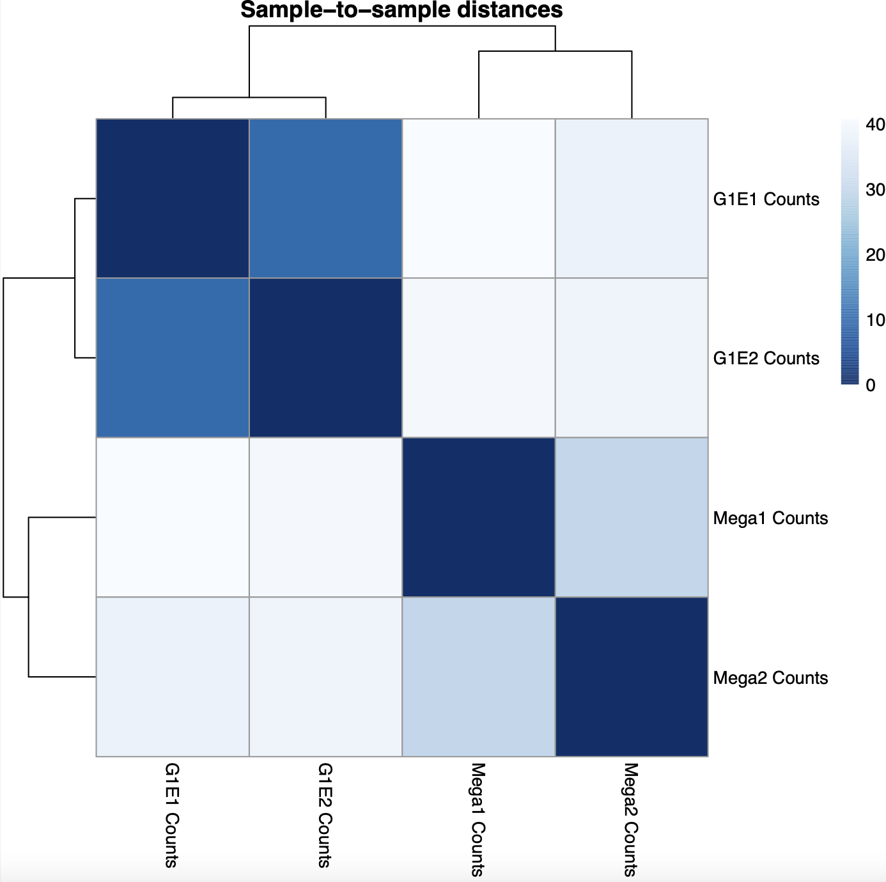

Identifying SNPS in NGS data from the 1000 Genomes Project (reference genome hg19) using two FASTQ files from the 1000 Genomes Project that represent a paired-end sequencing experiment. Both files were loaded into Galaxy.
Forward Reads:
ftp://ftp.1000genomes.ebi.ac.uk/vol1/ftp/phase3/data/HG00117/sequence_read/SRR044234_1.fil t.fastq.gz
Reverse Reads:
ftp://ftp.1000genomes.ebi.ac.uk/vol1/ftp/phase3/data/HG00117/sequence_read/SRR044234_2.fil t.fastq.gz
Part 1: FASTQC Phred encoding scheme: Sanger/Illumina 1.9
Part 2: Trimmomatic tool using a window size of 4 bases and an average quality of at least 20
Part 3: Reads were aligned to the reference genome hg19 using Bowtie2 (Output = BAM File)
Part 4: Variants were identified using FreeBayes. The output was limited to chr22:0-51304566
Part 5: Variant filtering and annotation
The VCFfilter tool was used to filter for variants that show heterozygosity (estimated allele frequency = 0.5) and have more than 10 reads covering them (total read depth > 10). To annotate which genes the variants are in, RefSeq genes from UCSC Main were retrieved in BED format.
The VCFannotate tool was used to intersect the filtered VCF file with the BED annotations.
Overall, there are 21 variants in the VCF file, and 11 were annotated with a RefSeq gene
Galaxy Workflow
Mouse ungroomed single-end FASTQ files with Illumina 1.5 phred encoding from a ChIP-seq experiment and downsampled to a part of chromosome 19 were loaded into Galaxy. The reads were converted to fastqsanger format using the FASTQ Groomer tool. Then, Trimmomatic was used to require a phred score greater than or equal to 20. The trimmed reads were aligned to the mm9 reference with Map with BWA. Finally, MACS2 callpeak was run on the experimental ChIP-seq with the control output as the control.
Analyzing the region chr19:37,340,169-37,340,716, the MACS peak appears to be located between two genes, Mus musculus RIKEN cDNA 4931408D14 gene (4931408D14Rik), transcript variant 2, long non-coding RNA (NR_040299), and Mus musculus insulin-degrading enzyme (Ide), mRNA (NM_031156).
Visualization of Bedgraph Treatment and Control files in IGV at the region specified above
Visualization of MACS2 Bedgraph Treatment file, narrow Peaks BED file, and aligned BAM file in IGV. The screenshot below demonstrates ChIP peaks near the Lrp5 gene.
Q: MACS2 produces a Bedgraph file, not a WIG file. How do those two file types differ? Can Bedgraph files be converted to WIG format and vice versa?
Both Bedgraph and WIG files store continuous data across a large genomic region, but the data in WIG files must be equal in size, while the Bedgraph files can store data of various sizes. Bedgraph files cannot be directly converted into WIG format but can be converted into BigWig, which is a compressed version of a WIG file. The BigWig file can then be converted into WIG format.
There is aPearl scriptavailable to convert WIG files to Bedgraph
Reference
Bedgraph track format. Genome Browser bedGraph Track Format. (n.d.). Retrieved from http://genome.ucsc.edu/goldenPath/help/bedgraph.html
Q: MACS2 has the option of generating 'broad peaks'. What type of ChIP-seq data should be analyzed for 'broad peaks' instead of 'narrow peaks'? Why?
ChIP-seq data specific to histone modification binding sites should be analyzed for broad peaks, while data specific to transcription factor binding sites should be analyzed for narrow peaks. Peaks associated with histones are generally wider than those associated with transcription factors.
Reference
Thomas, R., Thomas, S., Holloway, A. K., & Pollard, K. S. (2017). Features that define the best ChIP-seq peak calling algorithms. Briefings in bioinformatics, 18(3), 441–450. https://doi.org/10.1093/bib/bbw035
Q: MACS2 has the option to remove duplicate reads before peak-calling. What are duplicate reads and why would one choose to remove them?
Duplicate reads could be due to PCR amplification, library preparation, or simply multiple reads associated with the same binding site. The total tag count for experiments with a control could have duplicates that would introduce noise when calling peaks. Duplicates from PCR amplification and library preparation would be removed.
Galaxy Workflow
Based on theDe novo transcriptome reconstruction with RNA-Seq tutorial
Input Files
Part 1: Quality control
FASTQC and Trimmomatic
Part 2: Mapping
HISAT2
Part 3: De Novo Transcript Reconstruction
Stringtie on the HISAT2 alignments using the default parameters
Part4: Transcriptome Assembly
Stringtie-merge on the Stringtie assembled transcripts along with a file containing RefSeq annotations, followed by GFFCompare on the output from Stringtie-merge
Part5: Analysis of the Differential Gene Expression
FeatureCounts on the aligned reads from HISAT2 using the GFFCompare transcriptome database as the annotation file.
Part6: Differential Gene Expression Testing Using DESeq2
Parameters: “1: Factor”, “1: Factor level”: G1E, param-file “Counts file(s)”: featureCount files corresponding to the two G1E replicates, “2: Factor level”: Mega, param-file “Counts file(s)”: featureCount files corresponding to the two Mega replicates
Visualization in Trackster, region coordinates: chr11:96193539-96206376
The transcripts located in this region, Hoxb13 (NM_008267) and Gm11538 (NR_108029), are expressed only in G1E cell lines. Gm11538 is a predicted gene. The cluster in the middle, mostly associated with the minus strand of G1E, does not map to known transcripts in the RefSeq reference file.
DESeq2 Outputs
According to the Principal Component Analysis (PCA) plot, The G1E replicates appear to be more correlated with PC1, while the megakaryocyte replicates appear to be more correlated with PC2. The G1E replicates also appear to agree more with one another than the megakaryocyte replicates. This can also be seen in the heatmap of sample-to-sample distance matrix, where the distance between the G1E replicates is much lower (~5) than the distance between the megakaryocyte samples (~25)
PCA plot
Heatmap of sample-to-sample distance matrix

Q: How many transcripts have a significant (adjusted p-value < 0.01) change in expression between these conditions? How many transcripts are up-regulated in G1E? How many transcripts are down-regulated in G1E?
54 transcripts have a significant change in expression between these conditions.
31 transcripts are up-regulated in G1E (log2 fold changes greater than 0, or c3 > 0).
23 transcripts are down-regulated in G1E (log2 fold changes less than 0, or c3 > 0).
Q: Choose a transcript that is differentially expressed from part c and has a log2 fold change of at least 2 or -2. What is the transcript? What is the biological function of the gene corresponding to this transcript? In which cell type is this transcript more highly expressed, and by how much? Make a conjecture about how the difference in expression of this gene might explain or be a result of the cell types examined.
Transcript: NM_009846.2 - Mus musculus CD24a antigen (Cd24a), mRNA
log2 fold change: 5.8124286145091
Biological function of gene: CD24a is involved in the binding activity of proteins and carbohydrates, chemokine receptor transport, and cell proliferation. Additionally, CD24a is involved in several regulatory processes, such as the downregulation of cytokine production, the upregulation of immune responses, cell-cell adhesion, and lymphocyte activation.
According to the log2 fold change score, NM_009846 is upregulated in G1E cell types. This transcript is also more highly expressed in G1E cells. According to the featureCounts tool in Galaxy, there are 87 fragments counted in the G1E replicate 1 file and 126 fragments counted in the G1E replicate 2 file, while both of the Megakaryocyte files had 0 reads.
The normalized counts are as follows:
G1E is a GATA-null immortalized cell line derived from a disruption of the GATA-1 gene in the embryonic stem cells of mice, and megakaryocytes are cells involved in the production of platelets. As stated above, the Cd24a gene is associated with immune responses and white blood cells, which might explain why it is not expressed in megakaryocytes. Additionally, GATA1 is a transcription factor, and as the G1E cells express the Cd24a gene, GATA1 is probably not associated with the transcription of Cd24a.
View of RefSeq reference file, StringTie assembled transcripts, and bamCoverage files in Trackster:
References